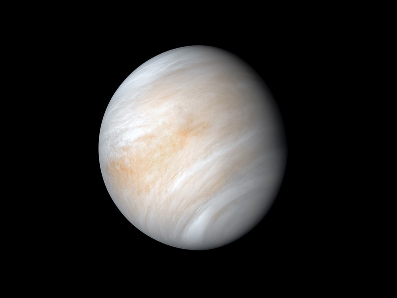

Venus is the second planet from the Sun and is Earth’s closest planetary neighbor. It’s one of the
four inner, terrestrial (or rocky) planets, and it’s often called Earth’s twin because it’s similar
in size and density. These are not identical twins, however – there are radical differences between
the two worlds.

Credit: NASA/JPL-Caltech
Overview
Venus has a thick, toxic atmosphere filled with carbon dioxide and it’s perpetually shrouded in
thick, yellowish clouds of sulfuric acid that trap heat, causing a runaway greenhouse effect. It’s
the hottest planet in our solar system, even though Mercury is closer to the Sun. Surface
temperatures on Venus are about 900 degrees Fahrenheit (475 degrees Celsius) – hot enough to melt
lead. The surface is a rusty color and it’s peppered with intensely crunched mountains and thousands
of large volcanoes. Scientists think it’s possible some volcanoes are still active.